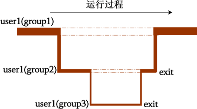

Linux newgrp命令用法详解：切换用户的有效组
当然是初始用户组的组身份生效，因为初始组是用户一旦登陆就获得的组身份。也就是说，用户的有效组默认是初始组，因此所创建文件的属组是用户的初始组。那么，既然用户属于多个用户组，能不能改变用户的初始组呢？使用命令 newgrp 就可以。
newgrp 命令可以从用户的附加组中选择一个群组，作为用户新的初始组。此命令的基本格式如下：
[root@localhost ~]# newgrp 组名
下面，我们通过一个实例，讲解此命令的具体用法和功能：
-
首先，建立 3 个用户组 group1、group2 和 group3，命令如下：
[root@localhost ~]# groupadd group1
[root@localhost ~]# groupadd group2
[root@localhost ~]# groupadd group3 -
创建一个用户 user1，同时指定 user1 的初始组为 group1，附加组为 group2 和 group3，执行命令如下：
[root@localhost ~]# useradd -g group1 -G group2,group3 user1
#由于指定了初始组，因此不会在创建 user1 默认群组
[root@localhost ~]# more /etc/group | grep user1
group2:x:501:user1
group3:x:502:user1 -
对用户 user1 设置密码，执行命令如下：
[root@localhost ~]# passwd user1
Changing password for user user1.
New password:
Retype new password:
passwd: all authentication tokens updated successfully. -
切换至 user1 用户，通过 newgrp 切换用户组进行下列操作，读者可从中体会出 newgrp 命令的作用。
#切换至 user1 用户
[root@localhost ~]# su - user1
[root@localhost ~]# whoami
user1
#使用 newgrp 命令一边切换 user1 的初始组，一边创建文件
[root@localhost ~]# mkdir user1_doc
[root@localhost ~]# newgrp group2
[root@localhost ~]# mkdir user2_doc
[root@localhost ~]# newgrp group3
[root@localhost ~]# mkdir user3_doc
#查看各文件的详细信息
[root@localhost ~]# ll
total 12
drwxr-xr-x 2 user1 group1 4096 Oct 24 01:18 user1_doc
drwxr-xr-x 2 user1 group2 4096 Oct 24 01:18 user2_doc
drwxr-xr-x 2 user1 group3 4096 Oct 24 01:19 user3_doc
newgrp命令的底层实现
其实，newgrp 命令每一次切换用户的初始组，该用户都会以另外一个 shell（新进程，也可以说是子进程）登陆，只不过在新 shell 上登陆的该用户，其初始组改变了而已。以上实例中，通过添加 shell 内置命令 "echo $$" 就可以发现，每次使用 newgrp 命令，都会切换到一个新的进程。
在本节实例中，使用 newgrp 命令切换用户初始组的整个过程，如图 1 所示：
图 1 newgrp 切换初始组程序运行过程图
当然，如果你想回到原本的环境，需要通过 exit 命令不断回退到当前进程的父进程，最终才能回到初始组为 group1 时的 user1 运行的 shell 中。
关注公众号「站长严长生」，在手机上阅读所有教程，随时随地都能学习。内含一款搜索神器，免费下载全网书籍和视频。

微信扫码关注公众号